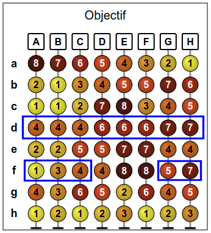
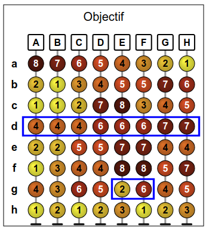

Solution
Recall the tip in the subject: the solution is more easily by studying only the spheres of the goal.
The last sorting step should place small spheres on the left and large spheres on the right. The last step must be c , e , or f . For example, suppose that c is the last step.

Thus, the column D will be placed on the far left. It will be necessary in the previous steps to ensure that the rods A , B , and C are sorted in the correct order. For example, we can ensure that the column A is left by sorting the line e at the penultimate step.

To place the column B to the left of the column C , you can start by sorting according to the line f.

In summary, one solution is to sort the lines f, e, c (in this order).
There were many other solutions, for example b, f, e, ou d, c, f, or e, c, f, etc...
Recall the tip in the subject: the solution is more easily by studying only the spheres of the goal.
The last sorting step is to arrange the spheres from the smaller to the left to the larger ones to the right. The last step must be a sort of the line c or the line e . Suppose for example that c is the last step.

Thus, the column A will be placed on the far right. It will be necessary in the preceding steps to ensure on the one hand that the rod B is to the left of the rod C , and on the other hand that the rods D , E and F are placed in the correct order.
To place B to the left of C , there is only one possibility, it is to sort according to the line a at a time before the last step.

It remains to put the rods D , E and F in the right order. The line e is the only one that places the column D to the left of the column E . To place the column E to the left of the column F , this can be done beforehand by sorting the line a , which we have already planned to perform.

In summary, one solution is to sort the lines a, e, c (in that order).
There was another solution: if we choose to end with the line e , applying a similar reasoning, we find the solution a, c, e.
Recall the tip indicated in the subject: the solution is more easily by studying only the spheres of the lens.
The last sorting step should arrange the spheres in ascending order of numbers. The last step is therefore necessarily a sort of the line d.

Sorting the line d will arrange the columns in 3 groups: a group on the left formed columns A, B et C, a group in the middle formed of the columns D , E and F , and a group on the right formed of the columns G and H . On the other hand, inside each group, the columns will not necessarily be in the right order.
The rods A , B and C can be placed in the correct order in one step, sorting in the penultimate step according to the line f . Sorting along this line allows you to place the G and H columns in the same order at the same time.

It remains to sort the middle group, formed of rods D , E and F . Sorting the f line that you plan to perform allows D to be placed to the left of E and F as desired. However, there is still a way to place E to the left of F . If we compare the numbers on the rods E and F , we can see that the line g is the only one that allows to place E to the left of F.

In short, the solution is to sort the lines g, f, d (in that order).

It's computer science !